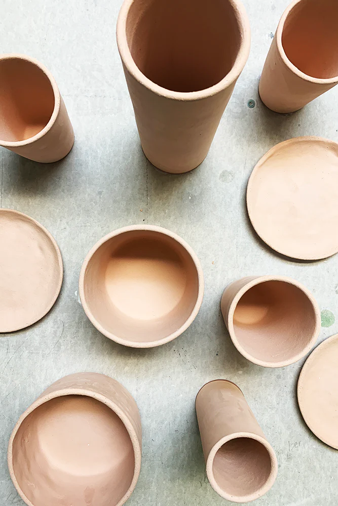

Bisqueware
Bisqueware is the intermediate stage of ceramics. Bisqueware is what you get when greenware has been fired in the kiln once. You fire greenware only at the bone dry stage. The water stored inside the clay in other stages of greenware will turn to steam causing your vessel to explode. Some properites and facts about Bisqueware are:
- It becomes hard and durable, but also brittle due to its hardness. It can be prone to chipping so be careful.
- Greenware shrinks after the bisque firing. This shrinkage can be as low as 4% or as high as 15%.
- It becomes porous, and can better absorb glazes, this means multiple layers (3 layers minimum) of a glaze is required for the glaze firing.
- Greenware can be stacked and touching each other when bisque firing, just make there are gaps where gases can vent through.
- Greenware objects bigger than a fist should not be completely solid, otherwise you'd either have to let it dry for alot longer or run the risk of it exploding due to mositure stull trapped at the core of the piece.
- All hollow vessels should have a small hole to vent gases so they do not explode.
- Let the kilns cool completely after firing to avoid burn injuries and to allow the bisqueware to anneal while cooling.

Glazeware
Glazeware is the final stage of ceramics. Glazeware is bisquare which has been glazed and then fired again. The glaze melts and vitrifies into glass. Glazes can be colorful or clear, shiny or matte, irridescent, spotty, and gradated. Some facts about Glazeware include:
- Before glaze firing you must foot your pot by wiping the glaze off the bottom of the vessel with a sponge or glaze mat, you should also wipe a millimeter or two off the body of the vessel depending on how runny your glaze is. The alternative would be putting your piece on kiln stilts which will leave tiny sharp holes in your piece where they were placed. If you are firing beads there is kiln wire which you can string your beads through and hang on bead racks or bead trees in the kiln.
- When glaze firing make sure your glazed bisque pieces do not touch each other because the glazes will melt and fuse these pieces together. Make sure every object has adequate space between one another in case the glaze drips off the vessel.
- Glazes can be a different color before and after firing. Glazes can also have chunks of frit or glass in them, or be of different viscosities.
- Glazeware is usually safe for cold liquids, anything else would require a food safe glaze, because heavy metals or chemicals in the glaze may leach out into the food or hot drink.
- There are many kinds of glazes such as underglaze, gloss glaze colorburst glaze, and salt glaze. These glazes all have different properties and uses.
- Glazes are made for different firing tempetures, cone 022 at the lowest and cone 12 at the highest. Make sure your the glaze your using is for the temperture your firing at. Glazes can look different when fired at different tempertures.